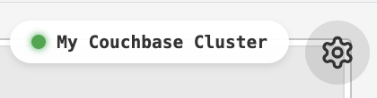
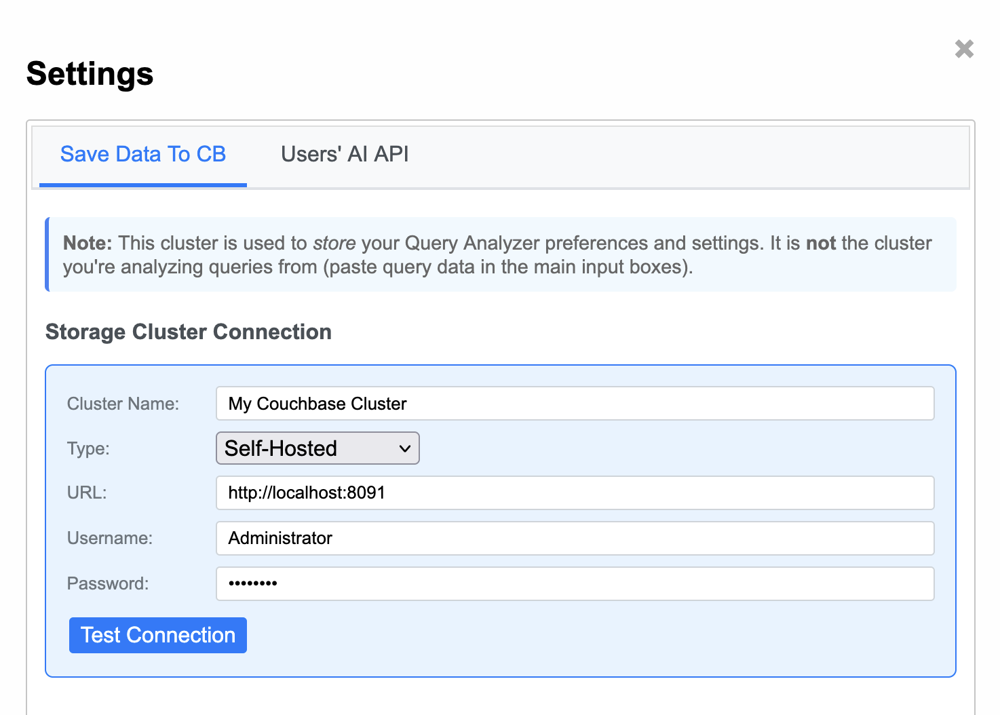
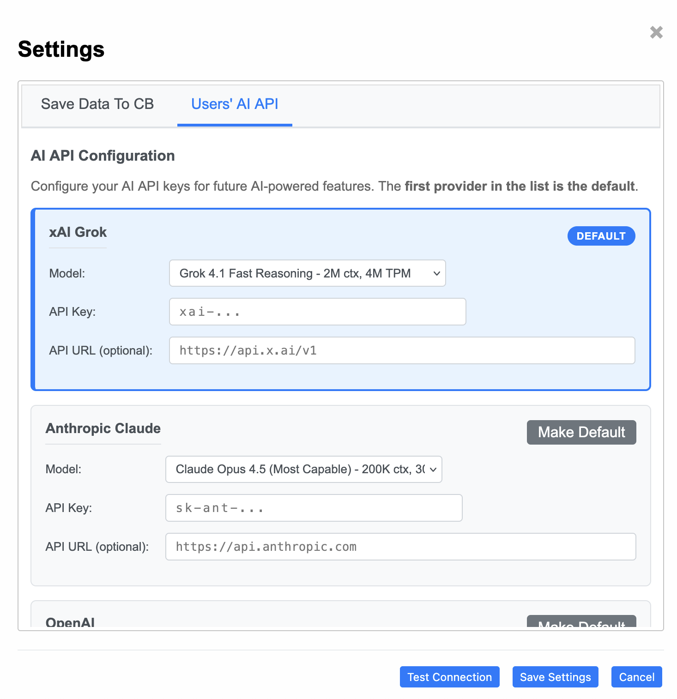

1. Get the Tool
You can run the tool using Docker or by downloading an executable.
docker pull fujioturner/couchbase-query-analyzer:latest docker run -p 5000:5000 fujioturner/couchbase-query-analyzer:latest
After running, open http://localhost:5000
- Download
cb_query_analyzer_macos, make executable:chmod +x, then run. - Security warning? Go to System Settings > Privacy & Security to allow.
- Download
cb_query_analyzer.exeand double-click to run. - "Windows protected your PC"? Click "More info" → "Run anyway".
2. Connect to Couchbase
Connect to a Couchbase cluster to save analysis data and preferences.
- Create Bucket:
cb_tools(256 MB) - Create Scope/Collection:
query.analyzer - Create Index:
CREATE INDEX `analysis_old_table_v2` ON `cb_tools`.`query`.`analyzer`( `createdAt` DESC INCLUDE MISSING, `metadata`, `status`, `prompt`, `provider`, `sourceCluster`, `parseJson`.`filters` ) WHERE (`docType` = "ai_analysis") - Create User: Database Credential with Read/Write on
cb_tools - Whitelist IP: Add IP to Allowed List
- Create Bucket:
cb_tools(256 MB) - Create Scope/Collection:
query.analyzer - Create Index:
CREATE INDEX `analysis_old_table_v2` ON `cb_tools`.`query`.`analyzer`( `createdAt` DESC INCLUDE MISSING, `metadata`, `status`, `prompt`, `provider`, `sourceCluster`, `parseJson`.`filters` ) WHERE (`docType` = "ai_analysis") - Create User: SDK User with Data Reader/Writer on
cb_tools
3. Configure the Tool
Once running and your Couchbase user is ready:
- Open http://localhost:5000
- Click Settings icon (Upper Right Corner)  → enter Cluster URL, Username, Password 
- Click Test Connection → Save Settings
4. Setup AI Analysis
Get an API Key from xAI Grok or OpenAI for AI-powered query analysis.
|
|
|
|---|---|
| Sign Up → Get API Key | Sign Up → Get API Key |
| In Settings Icon , select provider tab, paste API Key, click Save.  | |
Ready
🎉 Ready to Analyze!
You can now perform AI-powered analysis of your slow queries.
Start Analyzing → User Guide